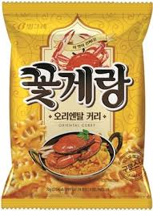

로그인
사이트맵
전체메뉴
남녀노소
회사소개
인사말
연혁
UI디자인(기업이념,디자인)
오시는길
제품안내
채용공고
커뮤니티
공지사항
질문답변
자주하는 질문
자료실
상품목록
남녀노소의 제품은 늘 최선을 다하여 만들고 있습니다.
제목
내용

꽃게랑
동남아의 유명 음식인 꽃게 커리에서 착안해 개발된 꽃게랑 오리엔탈 커리는 기존 꽃게랑의 바삭한 식감과 꽃게맛에 진한 커리향이 어우러져 색다른 맛을 낸다.
꽃게랑
동남아의 유명 음식인 꽃게 커리에서 착안해 개발된 꽃게랑 오리엔탈 커리는 기존 꽃게랑의 바삭한 식감과 꽃게맛에 진한 커리향이 어우러져 색다른 맛을 낸다.
꽃게랑
동남아의 유명 음식인 꽃게 커리에서 착안해 개발된 꽃게랑 오리엔탈 커리는 기존 꽃게랑의 바삭한 식감과 꽃게맛에 진한 커리향이 어우러져 색다른 맛을 낸다.
꽃게랑
동남아의 유명 음식인 꽃게 커리에서 착안해 개발된 꽃게랑 오리엔탈 커리는 기존 꽃게랑의 바삭한 식감과 꽃게맛에 진한 커리향이 어우러져 색다른 맛을 낸다.
꽃게랑
동남아의 유명 음식인 꽃게 커리에서 착안해 개발된 꽃게랑 오리엔탈 커리는 기존 꽃게랑의 바삭한 식감과 꽃게맛에 진한 커리향이 어우러져 색다른 맛을 낸다.
꽃게랑
동남아의 유명 음식인 꽃게 커리에서 착안해 개발된 꽃게랑 오리엔탈 커리는 기존 꽃게랑의 바삭한 식감과 꽃게맛에 진한 커리향이 어우러져 색다른 맛을 낸다.
꽃게랑
동남아의 유명 음식인 꽃게 커리에서 착안해 개발된 꽃게랑 오리엔탈 커리는 기존 꽃게랑의 바삭한 식감과 꽃게맛에 진한 커리향이 어우러져 색다른 맛을 낸다.
꽃게랑
동남아의 유명 음식인 꽃게 커리에서 착안해 개발된 꽃게랑 오리엔탈 커리는 기존 꽃게랑의 바삭한 식감과 꽃게맛에 진한 커리향이 어우러져 색다른 맛을 낸다.
꽃게랑
동남아의 유명 음식인 꽃게 커리에서 착안해 개발된 꽃게랑 오리엔탈 커리는 기존 꽃게랑의 바삭한 식감과 꽃게맛에 진한 커리향이 어우러져 색다른 맛을 낸다.
[<<이전]
1
2
3
4
5
[다음>>]
글쓰기